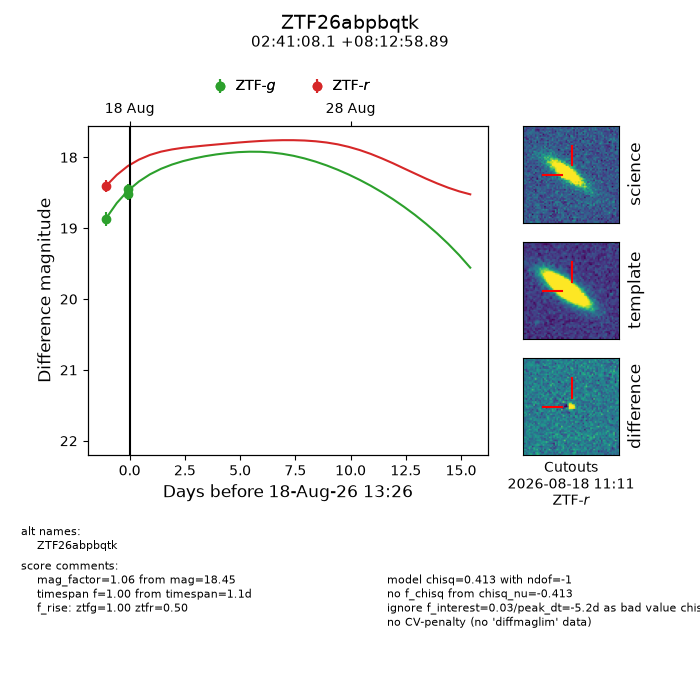
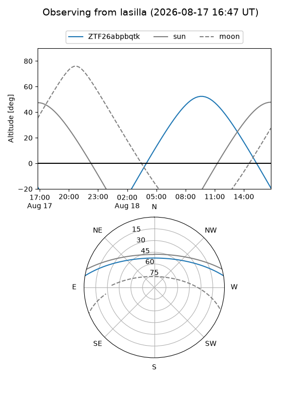
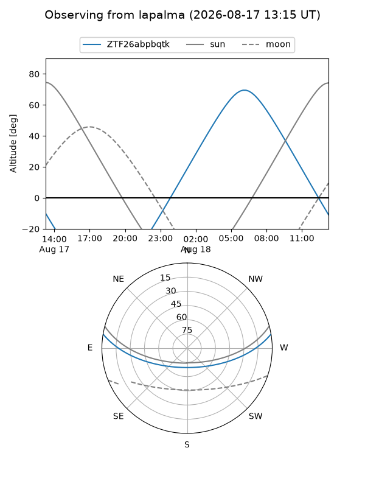
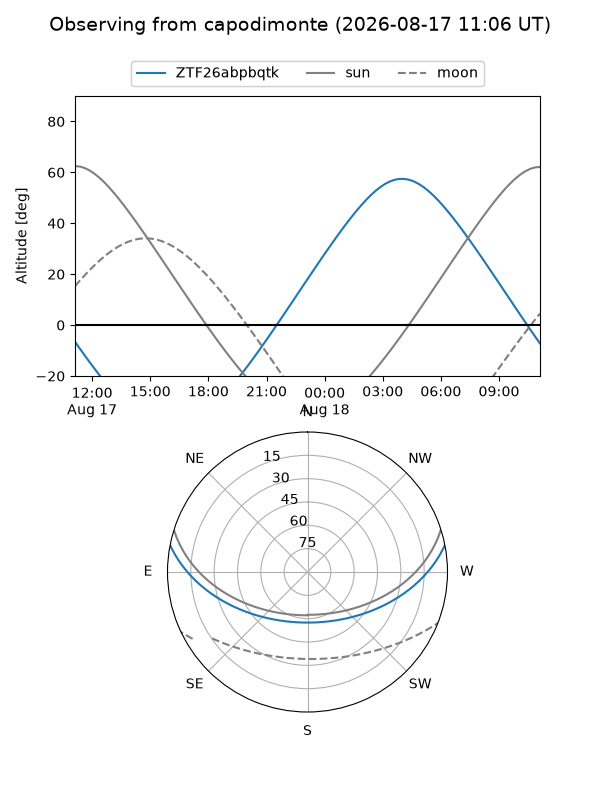
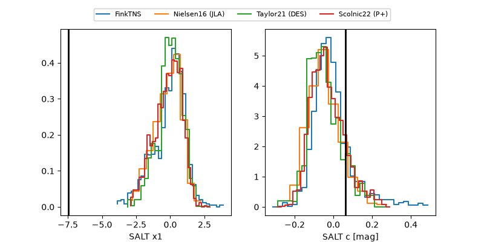

ZTF26abpbqtk
Target ZTF26abpbqtk at 2026-08-18 13:30
Aliases and brokers:
FINK-ZTF: ztf.fink-portal.org/ZTF26abpbqtk
Lasair-ZTF: lasair-ztf.lsst.ac.uk/objects/ZTF26abpbqtk
ALeRCE-ZTF: alerce.online/object/ZTF26abpbqtk
Direct TNS query: direct search
alt names
ZTF26abpbqtk (ztf,fink_ztf)
Coordinates:
equatorial (ra, dec) = 40.2838,+8.21636
equatorial (HMS+DMS) = 02:41:08.10,+08:12:58.89
galactic (l, b) = (163.7496,-45.78248)
Flags:
peak dt: -5.2
Photometry:
last ztfg=18.45, ztfr=18.40
3 ztfg, 1 ztfr detections
Lightcurve

Visibility



Additional plots
